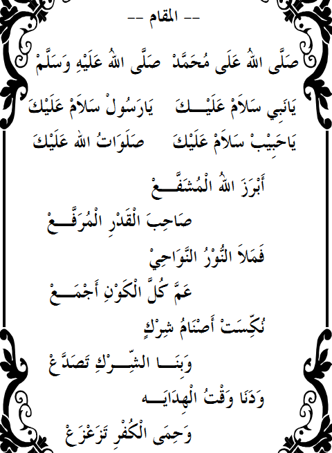
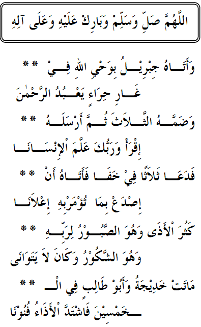

Adhiyaaul Laami'
Bagian 1
Cover
Biografi Pengarang
Al-Habib ‘Umar bin Muhammad bin Salim bin Hafidz bin Syeikh
Abu Bakar bin Salim dilahirkan di Tarim, Hadramaut, Yaman Selatan .Di usia
remaja beliau telah menghafal Al-Qur’an. Ayahandanya Al-Habib
Muhammad bin Salim bin Hafidz, adalah seorang ulama’ besar di zamannya
yang tidak pernah mengenal lelah untuk menegakkan kalimatullah di
masanya yang terkenal dengan kerasnya penguasa. Al-Habib ‘Umar
banyak mengambil ilmu dari ayahandanya hingga usia beliau 9
tahun, di mana ayahandanya diculik oleh kaum komunis yang
berkuasa, dan sejak saat itu tidak diketahui lagi khabar beritanya.
Sepeninggal ayahandanya, beliau banyak menimba Ilmu dari
kaka beliau, Al-Habib ‘Ali Masyhur, juga dari para ulama’-ulama’
besar di zamannya, khususnya Al-‘Allamah Al-Habib Muhammad bin
‘Alwi bin Syahab. Setelah beranjak dewasa. Beliau melanjutkan
pelajarannya di kota Baidho’, Yaman Utara, di pondok pesantren Al-
Habib Muhammad bin ‘Abdullah Al-Haddad lebih dari 10 tahun,
kemudian kepada ulama’-ulama’ Hijaz, di antaranya Al-Habib Ahmad
Masyhur bin Thoha Al-Haddad. Al-Habib ‘Attos bin ‘Abdullah Al-
Habsyi dan Al-Habib ‘Abdul Qadir bin Ahmad As-Seggaf.
Dakwah beliau telah menyebar di berbagai penjuru dunia, di
antaranya Oman, Mesir, Afrika, Sri Langka, Asia seperti Indonesia
dan Malaysia, Kanada dan sebaagian negara-negara Eropa.
Beliau juga mendirikan Pondok Pesantren “Darul Mustofa” di
kota kelahirannya yang banyak dituju para pecinta ilmu dari Jordan,
Syria, Mesir, Hijaz dan lainnya Asia dan Eropa. Setelah mereka
menyelesaikan pelajaran di "Daarul Musthofa" Mereka mengembangkan ilmunya
di negara masing-masing.
“Darul Mustofa”
kini telah memiliki lebih dari 30 cabang yang tersebar di berbagai
tempat seperti Hadhramaut, Yaman Utara, Hijaz dan Indonesia.
ADHIYAAUL LAAMI' - CAHAYA YANG TERANG BENDERANG Dalam Kelahiran Nabi Pemberi Syafa’at Oleh: Al-Habib ‘Umar Bin Muhammad Bin Salim Bin Hafidz Bin Syeikh Abu Bakar Bin Salim.
Bagian 2
Yaa Rabbi Sholli ...

Artinya - Indonesia
Dengan nama Allah Yang Maha Pengasih Maha Penyayang
Ya Allah limpahkanlah shalawat atas Muhammad,
Kekasih- Mu pemilik syafa’at yang dilimpahi syafa’at- Mu.
Ya Allah limpahkanlah shalawat atas Muhammad,
Semulia-mulia ciptaan, dalam keagungan dan derajatnya.
Ya Allah limpahkanlah shalawat atas Muhammad,
Makhluk yang termulia kedudukannya, melebihi segenap ciptaan.
Ya Allah limpahkanlah shalawat atas Muhammad,
Jalankanlah kami Wahai Tuhan ke jalan yang paling benar (jalan nabi- Mu).
Ya Allah limpahkanlah shalawat atas Muhammad,
Sembuhkanlah kami dari segala Keluhan penyakit,
Ya Allah Limpahkanlah Shalawat atas Muhammad,
Perbaikilah Hati dan ma’afkanlah, dan berilah kami (segala yang) manfa’at,
Ya Allah Limpahkanlah Shalawat atas Muhammad,
Bentengilah dari yang sedang memusuhi kami dan hindarkanlah kami dari musuh yang akan datang kepada kami,
Ya Allah Limpahkanlah Shalawat atas Muhammad,
Kami berlindung di dalam Benteng- Mu Yang Melindungi dari segala gangguan,
Ya Allah Limpahkanlah Shalawat atas Muhammad,
Ya Allah Ridhoilah kami dengan Keridhoan- Mu Yang Agung,
Ya Allah Limpahkanlah Shalawat atas Muhammad,
Jadikanlah kami berkompul dengan Nabi- Mu di Surga,
Ya Allah Limpahkanlah Shalawat atas Muhammad,
Jadikanlah kami selalu berdampingan dengan Sebaik-baik Ciptaan- Mu,
Ya Allah Limpahkanlah Shalawat atas Muhammad,
Ya Allah Limpahkanlah Shalawat atasnya serta Salam Sejahtera,
Ya Allah Limpahkanlah Shalawat dan Salam serta Keberkahan Padanya dan Pada Keluarganya,
Inna Fatahna ...
Artinya - Indonesia
Dengan nama Allah yang Maha Pengasih Maha Penyayang.
Aku berlindung kepada Allah dari setan yang terkutuk.
“ SESUNGGUHNYA KAMI TELAH MEMBENTANGKAN BAGIMU (Wahai Muhammad saw) KEMENANGAN YANG GEMILANG. AGAR DIA ALLAH MENGAMPUNI DOSA-DOSAMU YANG TERDAHULU DAN YANG AKAN DATANG. DAN MENYEMPURNAKAN NI’MAT NYA ATASMU (Wahai Muhammad saw), DAN DIA (Allah) MEMBERIMU PETUNJUK KE JALAN YANG LURUS, DAN ALLAH AKAN MEMBERIKAN PERTOLONGAN PADAMU DENGAN PERTOLONGAN YANG MULIA”,
“ SESUNGGUHNYA TELAH DATANG KEPADAMU UTUSAN DARI GOLONGANMU, DAN SANGAT BERAT BAGINYA (Muhammad saw) APA-APA YANG MENIMPA KALIAN, DAN SANGAT MENJAGA KALIAN (Dari Kemurkaan Allah dan Neraka), DAN IA SANGAT BERLEMAH LEMBUT DAN BERKASIH SAYANG ATAS ORANG-ORANG MU’MIN,
MAKA JIKA MEREKA INGKAR MAKA KATAKANLAH : CUKUPLAH PERTOLONGAN ALLAH BAGIKU, TIADA TUHAN SELAIN DIA, DAN KEPADA NYA AKU BERSERAH DIRI DAN DIA ADALAH PEMILIK ARSY YANG AGUNG”,
“ SESUNGGUHNYA ALLAH DAN PARA MALAIKAT NYA BERSHALAWAT ATAS NABI (saw), WAHAI ORANG-ORANG YANG BERIMAN BERSHALAWATLAH PADANYA, DAN BERILAH SALAM KEPADANYA DENGAN SEBAIK-BAIK SALAM SEJAHTERA”,
Ya Allah Limpahkanlah Shalawat dan Salam serta Keberkahan Padanya dan Pada Keluarganya.
1. Alhamdulillilladzi ...
Artinya - Indonesia
Segala puji bagi Allah yang telah memberi kita petunjuk,
Melalui Hamba- Nya yang terpilih(saw) yang telah menyeru kami
Kepada Nya dengan Izin Nya, dan sungguh Beliau (saw) telah menyeru kami,
Kami datang kepadamu Wahai Yang telah Menunjuki kami ke jalan yang benar (kami mendatangi panggilanmu Wahai Nabi saw), dan yang telah menyeru kami dengan Lemah Lembut dan Bahasa Indah,
Limpahan Shalawat padamu dari Allah yang telah Menciptakanmu,
Yang denganmu Wahai Pembawa Syafa’at, telah membuat kami Terpilih dan Terkasihi,
Juga pada Keluargamu yang Suci, sebagai Sumber-sumber Rahasiamu
Yang Tinggi, maka merekalah Bahtera Penyelamat yang Membentengi kami,
Dan pada Para Sahabatmu yang Mulia, yang menjadi Dinding Penyelamat bagi Ajaranmu dan Figur Panutan bagi Pencintanya (saw),
Juga terhadap para Tabi’in setelah mereka, yang mengikuti mereka dengan jujur dan bersungguh-sungguh,
Sebanyak puji pujian Kerinduan yang Merobohkan Kesedihan,
Demi Allah tidaklah diperdengarkan Nama Sang Kekasih (saw) pada orang yang mencintainya,
Maka akan tersentak gembira dan hilanglah segala kesusahan,
Dimanakah Para Pecinta, yang mereka itu rela berkorban dengan Nyawa dan meremehkan hal-hal yang berharga (yang bersifat duniawi),
Tidaklah mereka mendengar sebutan Nama Thaahaa Al Musthafa (saw),
Maka bangkitlah Semangat dan hilanglah segala Kegundahan hati,
Maka Bergetarlah ruh-ruh merindukan perjumpaan, dan merintih memohon Keridhoan dari Tuhan Nya,
Begitulah keadaan para Pecinta maka dengarlah Perjalanan Hidup Sang Pembawa Syafa’at dan Konsentrasikanlah Pendengaran,
Maka Simaklah akan sifat-sifat Thaahaa (saw), Imam yang Terpilih
Dan hadirkanlah hatimu, niscaya terpenuhilah hatimu dengan Kerinduan padanya (saw),
Wahai Tuhan Kami Limpahkanlah Shalawat dan Salam Sejahtera Selamanya,
pada Kekasih Mu yang telah menyeru kami Kepada Mu,
Ya Allah Limpahkanlah Shalawat dan Salam serta Keberkahan Padanya dan Pada Keluarganya
2. Nabbaanallah ...
Artinya - Indonesia
Maka telah datang kabar dari yang berfirman : “ TELAH DATANG KEPADAMU CAHAYA ….. “ (QS Al Maidah : 15), Maha Suci Yang Telah Mengabarkannya kepada kita,
Dan cahaya Thaahaa Hamba- Nya, terlimpahkan dengan mengingatnya (saw), maka Agungkanlah Sang Pemberi Anugerah,
Dia (saw) adalah Rahmat dari Sang Pencipta, maka renungkanlah Firman Nya : “ MAKA BERGEMBIRALAH KAMU “, (“KATAKANLAH : DENGAN DATANGNYA ANUGERAH ALLAH DAN RAHMATNYA MAKA DENGAN ITU KALIAN BERGEMBIRALAH“) maka bergegaslah untuk bergembira dengan Kedatangannya (saw),
Dengan berpegang teguh pada Tali terkuat (Al Qur’an dan Hadits) dan berusahalah senantiasa berada di Jalan Allah, yang telah menciptakan kita,
Renungkanlah Cahaya cahaya (Rasul saw) yang ketika dikatakan kepadanya (saw) “sejak kapankah Kenabianmu ?” , maka sabdanya kenabianku sejak Adam As,
Masih berada diantara Air dan Tanah “, maka sadarlah kamu dari kelalaianmu itu dan bangkitlah sadar,
Maka fahamilah rahasia-rahasia Tuhanku yang selalu memindahkanku (saw) diantara Sulbi orang mulia ke sulbi orang yang mulia dan terpilih,
Tidaklah terpisah dari dua kelompok (Suku), terkecuali aku berada pada yang terbaik, begitulah hingga aku dilahirkan,
Maka aku adalah yang terpilih dari yang terpilih, dan aku terlahir dari pernikahan yang Tuhanku telah menjaganya,
Allah telah menyucikan (saw), serta menjaga dan memilihnya (saw), maka tidaklah pernah Allah memunculkan manusia menyerupainya (saw),
Dan dengan mencintainya dan mengingatnya serta membantu syari’atnya dan dengan penghormatan padanya (saw) Allah pencipta Arsy telah mewasiatkan kita,
Wahai Tuhan Kami Limpahkanlah Shalawat dan Salam Sejahtera Selamanya, Pada Kekasih Mu yang telah menyeru kami Kepada- Mu,
Ya Allah Limpahkanlah Shalawat dan Salam serta Keberkahan Padanya dan Pada Keluarganya,
3. Hadza wa qad nasyaro...
Artinya - Indonesia
Begitulah, dan telah Tuhan sebarkan tentang sifat-sifatnya (saw) dalam kitab kitab terdahulu dan Al Qur’an yang menjelaskannya dengan sejelas jelasnya,
Dia (Allah) telah mengambil Perjanjian dari para Nabi ketika telah Kudatangkan pada kalian Hikmah dan Kemuliaan,
Dan datanglah pada kalian (wahai para Nabi) Utusan Kami (saw) maka agar kalian (wahai para Nabi) beriman padanya, dan kalian (wahai para Nabi) mendukungnya (saw), dan agar kalian (wahai para Nabi) menjadi pengikutnya,
Dan bahwasannya Para Nabi terdahulu telah memberi kabar gembira pada umat umat mereka akan kedatangan nabi terpilih, maka Muliakanlah Martabat dan Kedudukkannya,
Maka apabila telah datang hari kiamat, para Nabi terdahulu berjalan di bawah naungan Panji Sang Nabi (saw) yang telah menyeru kita,
Wahai Umat Islam, aku adalah yang pertama Sebagai Pemberi Syafa’at dan yang Pertama menyebarkannya, dan tidaklah aku ragu dan memperlambat,
Hingga diserukan kepadaku (ketika bersujud memohon syafa’at) angkatlah kepalamu (wahai Muhammad), dan katakanlah permintaanmu niscaya Ku kabulkan permohonanmu dan bicaralah niscaya Ku dengar pembicaraanmu, sungguh Bintang Kemuliaanmu (Wahai Nabi saw) sungguh jelas dan terang,
Dan Panji Pujian kepada Allah Yang Maha Perkasa berada di tanganku (saw) dan aku (saw) adalah manusia pertama yang mendatangi surga- Nya,
Dan aku (saw) telah menjadi ciptaan yang paling mulia di sisi Allah, maka sungguh engkau (wahai nabi) telah terpelihara oleh Allah dengan kasih sayang- Nya,
“DAN AKAN DIA LIMPAHKAN KEPADAMU (saw) ANUGERAH KAMI HINGGA ENGKAU (saw) PUAS” (dan ayat ini) merupakan tanda kebesaran dari Yang Maha Pemberi, dan pemberian itu merupakan hal yang akal sulit untuk menerimanya (seperti banyaknya Mukzijat beliau saw),
Demi Allah ulang-ulanglah peringatan sifat-sifat Muhammad, agar menjadi penawar dan pengikis kotoran-kotoran hati,
Wahai Tuhan Kami Limpahlanlah Shalawat dan Salam Sejahtera Selamanya pada Kekasih Mu yang telah menyeru kami Kepada- Mu,
Ya Allah Limpahkanlah Shalawat dan Salam serta Keberkahan Padanya dan Pada Keluarganya,
4. Lammaa danaa ...
Artinya - Indonesia
Ketika telah dekat waktu kelahiran Ahmad (saw) dari Izin Nya, yang apabila menghendaki sesuatu tidaklah akan terhalang,
Ia (saw) berada di dalam kandungan Sang Ibu Aminah binti Wahb, yang baginya telah Allah Muliakan Martabatnya (sebagai ibu bagi sebaik baik ciptaan),
Dari ayah Sang Hamba yang terpilih (saw), yaitu (ayahnya itu) Abdullah bin Abdul Muthalib yang melihat tanda-tanda (Isyarat Kenabian),
Telah terjadi bahwa wajahnya (ayahnya) diterangi Cahaya Thaahaa (saw) yang kemudian berpindah kepada Sang Anak yang terjaga ini (cahaya itu) terlihat dengan jelas,
Dan dia adalah keturunan Hasyim yang Mulia dan Perkasa , putra Abdu Manaaf, Keturunan Qushay yang dahulu,
Ayahnya digelari Hakiim (orang yang adil) dan kepribadiannya telah termasyur, maka berbanggalah dengan kepribadian itu,
Dan hafalkanlah silsilah keturunan Nabi yang Terpilih hingga kau temukan silisilahnya pada (datuknya) Adnan,
Apabila telah sampai kepada Adnan maka berhentilah, (bahwa setelah Adnan, banyak riwayat yang berbeda) dan ketahuilah bahwa nasabnya bersambung hingga Ismail As (putra Ibrahim As) yang telah menjadi pendukung Ayahnya (Ibrahim As),
Dan ketika Aminah (ra) mengandungnya (saw) tidaklah Ia (Ibundanya ra) merasa sakit sebagaimana keluhan wanita hamil,
Baginya (Aminah ra) selubung Kelembutan dari Allah Pemelihara Langit, hilanglah segala gangguan, kegelisahan dan kesedihan,
Kemudian ia (Aminah ra) menyaksikan sebagaimana yang telah diketahuinya, bahwa Yang Maha Pemelihara telah memuliakan Alam Semesta,
Dengan kesucian bayi di dalam kandungannya, maka iapun bergembira ketika telah dekat saat saat kelahiran, maka berluapanlah limpahan keridhoan Nya, (Tasbih, Tahmid, Tahlil, Takbir, 4X)
Maka Muncullah Cahaya Cahaya dari segala penjuru dan Detik Kelahiranpun tiba,
Beberapa saat sebelum terbitnya fajar Muncullah Matahari Hidayah, Lahirlah Sang Kekasih yang Termuliakan dan Terjaga
5. Mahaalul qiyaam ...

Artinya - Indonesia
Bershalawat Allah kepada (Nabi) Muhammad
Bershalawat Allah padanya dan memberi salam sejahtera (3x)
Wahai Nabi salam sejahtera bagimu, Wahai Rasul salam sejahtera bagimu.
Wahai Kekasih salam sejahtera bagimu, Shalawat Allah bagimu.
Telah tiba dengan kehendak Allah sang penberi syafa’at, Yang memiliki derajat yang
dimuliakan.
Maka limpahan cahaya memenuhi segala penjuru, Meliputi seluruh alam semesta.
Maka berjatuhanlah patung-patung berhala di ka’bah, Dan tumbanglah sendi-sendi
kemusyrikan.
Maka dekatlah saat-saat petunjuk, Dan benteng kekafiranpun berguncang.
Salam sejahteralah atas kedatanganmu, Wahai sang pemilik derajat yang mulia.
Wahai Imam dan pemimpin para Rasul, Yang dengannya bencana-bencana terhapuskan.
Engkaulah satu-satunya harapan di hari Qiamat, Kepadamulah seluruh ciptaan berlindung dari
kemurkaan Allah.Kemudian mereka datang memanggil-manggilmu dengan penuh harapan,
Ketika menyaksikan dahsyatnya kesulitan dan rintangan.
Maka karena itulah engkau (SAW) bersujud kehadirat Tuhanmu,
Maka diserukan kepadamu berikanlah syafa’at, karena engkau diizinkan memberi
syafa’at.
Maka atasmu limpahan shalawat dari Allah, Selama cahaya masih bersinar terang benderang.
Dan denganmu (SAW) kami memohon kepada Ar Rahmaan, Maka pencipta Arsy mendengar
do’a kami.
Wahai pemberi anugerah yang mulia, Wahai Tuhan, Kumpulkanlah kami dengan AlMusthafa
(SAW).
Dan demi Dia (SAW), maka pandanglah kami dengan kasih sayangmu, Dan berilah kami segala
yang kami inginkan.
Dan hindarkanlah kami dari segala bencana, Dan jauhkanlah segala kesulitan, dan angkatlah
sejauh-jauhnya.
Dan siramilah Wahai Tuhanku serta tolonglah kami, Dengan lebatnya curahan rahmat-
Mu.
Dan akhirilah usia kami dengan husnul khatimah, Dan terimalah kami dengan baik saat kembali
kepada- Mu
Dan terlimpahlah shalawat dari Allah, Baginya (SAW) yang kepadanya terkumpul segala
kebaikan.
Ahmad yang tersuci serta keluarganya, Dan sahabatnya sebanyak pijaran cahaya.
Ya Allah Limpahkanlah Shalawat dan Salam Sejahtera serta Keberkahan Padanya dan
Pada Keluarganya,
6. Wulidal habiib ...
Artinya - Indonesia
Artinya
7. Hadza wa qad nasyaa ...

Artinya - Indonesia
Artinya
8. Wa aatu jibriilu ...

Artinya - Indonesia
Artinya
Bagian 3
Doa

Artinya - Indonesia
Maka telah ku Isyaratkan untuk menyifatkan Budi Pekerti (Beliau saw) yang menghidupkan dan
mengguncang luruhkan kegundahan,
Dan Allah Telah Memujinya maka apalah artinya pujian kita dan bagaimana (pujian kita ini)
dinamakan pujian,
Akan tetapi cinta kasih dalam sanubari telah menuntut untuk memuji hamba Pilihan Pencipta
kita yang telah menyeru kita dengan Kelembutan,
Maka setelah kita berpadu dengan cinta dan kasih sayang (terhadap Nabi saw) maka disinilah
kita mengangkat kedua tangan kita yang hina dina untuk berdo’a dengan penuh pengharapan,
Kepada Tuhan Yang Maha Tunggal dalam Ke Esaan Nya, serta Maha Mulia dengan mengambil
perantara pada yang telah menyeru kita Kepada Nya,
Hamba- Nya yang terpilih, Kekasih- Nya serta hamba- Nya yang Terkemuka dan sebaik-baik
Ciptaan di Alam Semesta yang dengannya (saw) Allah telah menciptakan kita,
Wahai Tuhan kami, Wahai Tuhan Kami, Wahai Tuhan kami, Demi Nabi yang Terpilih
Terimalah Kami dan Kabulkanlah Do’a Kami,
Hanya Engkaulah Harapan Kami, Hanya Engkaulah Harapan Kami, Wahai satu-satunya Tempat
Memohon dan Harapan di Dunia dan di Akhirat kami,
Perbaikilah Keadaan Kami dan Ampunilah Dosa-Dosa Kami dan Janganlah Engkau Murkai
Kami apabila kami berbuat kesalahan,
Dan jadikanlah kami selalu berjalan pada ajaran Nabi Thaahaa (saw) yang terpilih dan
kuatkanlah serta tetapkanlah langkah-langkah kami pada jalan yang telah dilalui oleh Sang
Kekasih,
Dan Perlihatkanlah kami Demi Anugerah dari Mu, Wajah Nabi Mu dalam Gemilangnya
Kegembiraan dengan Pandangan Kasih Sayang serta Keridhoan yang selalu menaungi kami,
Dan ikatlah kami selalu dengan Beliau (saw) dalam segala gerak-gerik kami, dan juga orang-orang yang mengikuti kami dan mencintai kami,
Demikian pula orang-orang yang beramal shalih dan orang-orang yang mendengar da’wah kami,
orang yang kami berhutang budi pada mereka dan orang-orang yang memohon nasehat dari
kami,
Juga atas para hadirin dan penyelenggara, maka Wahai Allah Inilah kami di hadapan Mu dan
Engkau Melihat Kami,
Dan bahwasanya kami Mengharapkan Mu, maka Kabulkanlah Permohonan kami dan Dengarlah
demi Kemurahan Mu, Do’a Kami wahai Yang Maha Mendengar,
Dan Pilihlah Kami sebagai Penolong Sunnah Thaahaa (saw) di Seluruh Pelosok Bumi, dan
Hancurkanlah semua yang memusuhi kami,
Dan Pandanglah Kami dengan Kasih Sayang Mu dan berilah kami minuman dari cangkir-cangkir
(Mahabbah Rasul saw) dan Sembuhkanlah Penyakit yang ada pada kami dengan segera,
Dan kabulkanlah segala hajat kami dan akhirilah hidup kami dengan kebaikan dan jadikanlah
kebaikan pula di hari kemudian,
Wahai Allah Kumpulkanlah Kami Bersama Kekasih-Kekasih Kami di surga Firdaus- Mu Wahai
yang hanya kepada Nya harapan kami,
Demi Hamba (saw) yang terpilih yang Limpahan Shalawat selalu atasnya dan atas keluarga serta
keturunannya sebanyak hembusan angin di pagi hari,
Maha Suci Tuhanmu Pencipta Yang Maha Memiliki Kekuasaan, dari apa yang mereka
sifatkan,
Dan Salam Sejahtera atas Para Rasul,
Dan Segala Puji Bagi Allah Pencipta Seluruh Alam,
Penutup